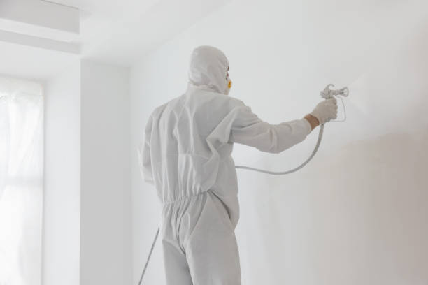
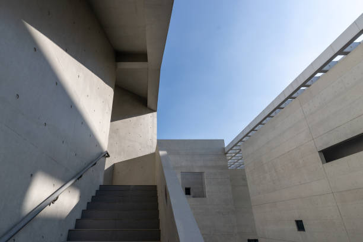

Jefferson Valley Yorktown New York
info@hudsonconcretecontractors.xyz
Jefferson Valley Yorktown New York
info@hudsonconcretecontractors.xyz

Top-rated concrete services in Jefferson Valley Yorktown New York . We provide expert installation and repair for driveways, sidewalks, and patios. Reliable, durable, and cost-effective solutions tailored to your needs.
Click Here To Call Us (877) 848-1711When it comes to durable and aesthetically pleasing concrete solutions in Jefferson Valley Yorktown New York our company stands out as the leading provider. With years of experience in the concrete industry, we specialize in delivering high-quality concrete installations, repairs, and maintenance services that meet the specific needs of both residential and commercial clients.
Our team of skilled professionals is committed to using the finest materials and the latest techniques to ensure your concrete projects are completed on time and within budget. Whether you need a new driveway, patio, sidewalk, or foundation, we guarantee a seamless process from start to finish. We pride ourselves on our ability to handle projects of all sizes with the utmost precision and care.
At Concrete, we understand the importance of investing in long-lasting and reliable concrete structures. That’s why we use only top-grade materials that are engineered to withstand the test of time, even in the harshest weather conditions in Jefferson Valley Yorktown New York . Our dedication to excellence and customer satisfaction has earned us a reputation as the go-to concrete company in the region.
If you’re searching for trusted concrete contractors in Jefferson Valley Yorktown New York look no further. Contact us today for a free consultation and discover why we’re the best choice for all your concrete needs in Jefferson Valley Yorktown New York .
Residential & commercial Concrete
Quality services at affordable prices
Immediate 24/ 7 emergency services


Cracks in concrete surfaces can be more than just an eyesore; they can also indicate underlying issues that need attention. At Hudson Concrete Contractors, serving Jefferson Valley Yorktown New York we understand the common causes of concrete cracking and how to address them effectively.
Temperature Fluctuations
One of the most common reasons for concrete cracks is temperature changes. Concrete expands in the heat and contracts in the cold. Without proper expansion joints, these fluctuations can cause the surface to crack. Ensuring that your concrete is poured and cured under the right conditions helps mitigate this issue.
Poor Concrete Mix and Installation
The quality of the concrete mix and the installation process significantly impact the likelihood of cracking. An improper mix ratio, inadequate curing, or poor workmanship can weaken the concrete and lead to cracks. At Hudson Concrete Contractors, we use high-quality materials and adhere to industry best practices to ensure a durable finish.
Structural Overload
Concrete surfaces are designed to support specific loads. Overloading, whether from heavy vehicles or equipment, can put undue stress on the concrete and cause it to crack. Ensuring that your concrete is designed to handle the expected load is crucial for its longevity.
Settlement and Soil Movement
Uneven settling of the soil beneath the concrete can lead to cracking. Soil movement due to erosion, poor drainage, or other factors can cause the concrete slab to shift and crack. Proper site preparation and soil stabilization can prevent this issue.
Shrinkage Cracking
As concrete dries, it naturally shrinks. If the curing process is not managed correctly, this shrinkage can lead to surface cracks. Controlled curing methods and the use of joint fillers can help minimize shrinkage cracking.
For expert concrete solutions in Jefferson Valley Yorktown New York trust Hudson Concrete Contractors to provide high-quality installations and repairs. Contact us today to learn more about preventing and addressing concrete cracks in your property!
Residential & commercial Concrete
Quality services at affordable prices
Immediate 24/ 7 emergency services
If you’re looking for cement contractors near you in Jefferson Valley Yorktown New York we are your ideal choice. Our team consists of trained professionals who specialize in all aspects of cement work, from mixing to application. We understand the specifics involved in working with cement and are committed to ensuring that your projects are completed to the highest standards. By choosing our services, you gain access to expertise, competitive pricing, and a dedication to quality that is unmatched in the area.

Budget constraints shouldn’t prevent you from getting quality concrete services. Our affordable concrete services provide you with high-quality solutions without breaking the bank. We offer a range of services tailored to fit your budget, whether you need a new driveway, patio, or concrete resurfacing. By choosing us, you ensure that you're getting the best value for your investment, with no compromise on quality or service.

Protecting your concrete surfaces is essential to extending their lifespan. Our concrete sealing services in Jefferson Valley Yorktown New York provide a protective barrier against moisture, stains, and damage. Our experienced technicians use high-quality sealants that enhance the durability and appearance of your concrete. Whether it’s for residential or commercial properties, we customize our sealing services to meet your specific needs. At Concrete, we understand the importance of maintaining your concrete, and we are here to offer expert advice and solutions for all your sealing needs.
Uneven concrete surfaces can pose safety hazards and detract from the appearance of your property. Our concrete leveling services can help restore stability and efficiency to your surfaces. We utilize advanced techniques, including mudjacking and polyjacking, to lift and level your concrete quickly and effectively. Our skilled team thoroughly assesses the situation and executes the best solution to ensure your concrete is even and safe. Trust us for your concrete leveling needs and bring back the functionality of your spaces.
A solid foundation is the key to any successful construction project, residential or commercial. Our concrete foundation installation services are designed to provide a strong, stable base for your building. We carefully assess your site and tailor our methods to ensure optimal stability and compliance with local regulations. By choosing us, you ensure that your foundation is constructed with precision, setting the stage for a durable structure that will last for generations.
If you’re looking to add vibrant color and style to your concrete surfaces, our concrete staining services are the perfect solution. Staining is an excellent way to enhance the appearance of patios, driveways, and floors, providing a beautiful finish that resembles natural stone. We utilize high-quality stains and expert techniques to achieve stunning results. Choosing us means you receive professional service, creative design options, and a beautiful transformation that will elevate your space.

With so many concrete construction companies available, selecting the right partner for your project can be daunting. Our company sets itself apart through our commitment to quality, customer service, and reliability. From residential projects to large commercial builds, we have the expertise to handle jobs of any size. Our experienced team utilizes the latest technology and practices to deliver outstanding results aligned with your specifications and deadlines.

Our ready mix concrete delivery services in Jefferson Valley Yorktown New York provide a convenient solution for all your concrete needs. With a focus on punctuality and quality, we ensure that your concrete is mixed to perfection and delivered right when you need it. Our team is committed to maintaining the highest standards in concrete quality, guaranteeing that your projects flow seamlessly. By choosing us, you gain a reliable partner capable of meeting your demands efficiently and effectively.
Years Experience
Expert Technicians
Satisfied Clients
Compleate Projects
At Painting Vikmanic, we understand that choosing the right painting contractor is essential for enhancing the beauty and value of your property in Jefferson Valley Yorktown New York . Our commitment to quality, professionalism, and customer satisfaction sets us apart in the industry.
Why choose us? First, our team of skilled professionals is dedicated to providing top-notch painting services tailored to your unique needs. Whether you’re looking to refresh your home’s interior, boost curb appeal with exterior work, or require specialized finishes, we have the expertise to deliver stunning results.
We utilize only the best materials and techniques, ensuring long-lasting durability and a flawless finish. Our attention to detail guarantees that every project is completed to the highest standards, giving you peace of mind. Furthermore, we prioritize open communication and transparency throughout the process, keeping you informed every step of the way.
As a locally-owned company, we take pride in serving the Jefferson Valley Yorktown New York community. Our reputation is built on trust, reliability, and a passion for excellence. We offer free estimates and consultations, making it easy for you to plan your next painting project without any obligation.
Choose Painting Vikmanic for your painting needs in Jefferson Valley Yorktown New York , and experience the difference of working with a contractor who truly cares about your vision. Let us bring your ideas to life with vibrant colors and exceptional craftsmanship. Contact us today to get started!
When searching for the best concrete contractors near you, it can be overwhelming to sift through all the local options. At Concrete, we understand that you want reliable, professional, and affordable services. Our team of expert concrete contractors in Jefferson Valley Yorktown New York is committed to delivering exceptional quality and customer satisfaction. Whether it’s a new driveway, patio, or commercial project, we have the skills and resources to handle any size job. We pride ourselves on our strong reputation built on trust and quality work, making us the best choice for your concrete needs.
In today's world, ensuring your home has a solid foundation is key to its longevity and aesthetic appeal. Our residential concrete services in Jefferson Valley Yorktown New York encompass everything from driveways to patios and walkways. We pride ourselves on using the finest materials and techniques to provide durable, visually appealing surfaces that stand the test of time. Plus, our team will work closely with you to create custom designs that fit your vision and budget, making your home beautiful and functional.
In the heart of any thriving business lies a commitment to quality and reliability. Our commercial concrete contractors specialize in large-scale projects that require careful planning and execution. From retail spaces to office buildings, we provide a comprehensive range of services, including concrete pouring, foundation installation, and decorative concrete finishes. With a focus on understanding the unique requirements of your business, we ensure minimal disruption while delivering results that enhance your business's functionality and appeal.
A concrete driveway is not just a parking space; it’s an essential component of your home’s first impression. Our concrete driveway installation services are designed to provide you with a durable and attractive entryway to your property. We utilize high-grade materials and expert craftsmanship to ensure that your driveway can withstand heavy loads and harsh weather. Our team takes care of every detail, from the initial excavation to the final finishing touches, ensuring that the installation process is seamless and hassle-free for you. Choose us for your driveway installation needs and enjoy a beautiful, long-lasting solution that enhances your home’s value.
Transforming your outdoor space into a beautiful, functional area is possible with our concrete patio installation services in Jefferson Valley Yorktown New York . Patios add value and enjoyment to your property, providing a perfect space for gatherings and relaxation. Our experienced team will work with you to design and install a patio that complements your home’s aesthetic while ensuring durability and weather resistance. With our commitment to high-quality craftsmanship, you can enjoy your new patio for years to come.
Stamped concrete is an ideal solution for those seeking the beauty of natural stone or brick without the high costs. Our stamped concrete services allow you to customize your concrete surfaces with patterns and colors that enhance your property’s aesthetic. Whether for driveways, patios, or walkways, our team is dedicated to providing meticulous applications that result in stunning surfaces. With our innovative techniques and materials, your stamped concrete will not only look fantastic but also stand up to the elements.
A strong foundation is crucial for the integrity of any structure. If you suspect that your foundation may be compromised, our concrete foundation repair services are here to help. We understand the signs of foundation issues, from cracks and uneven floors to water intrusion, and our expert team knows how to address them effectively. Using advanced techniques and top-quality materials, we provide reliable repairs that restore the stability and safety of your property. When you choose us for your foundation repair project, you gain a committed partner dedicated to ensuring your home remains a safe and secure environment.
The durability and flexibility of concrete slabs make them a popular choice for various applications, including basements, patios, and commercial floors. Our concrete slab installation services are designed to provide a solid and level surface that meets your needs. We work closely with you to determine the right thickness and reinforcement for your specific project, ensuring optimal performance over the long term. Our commitment to quality and customer satisfaction makes us the top choice for concrete slab installations.
Elevate the visual appeal of your property's concrete surfaces with our decorative concrete services . From intricate patterns to vibrant colors, we offer a range of options that enhance your patios, driveways, and walkways. Our expert craftsmen utilize the latest techniques and tools to deliver stunning, long-lasting results that reflect your personal style. With a commitment to excellence, we ensure your decorative projects are completed on time and within budget.
Over time, concrete surfaces can suffer from wear and tear, leading to unsightly cracks and stains. Our concrete resurfacing services provide an effective solution to rejuvenate and restore your surfaces. Whether it’s your driveway, patio, or flooring, we apply a high-quality resurfacer that covers imperfections and improves the overall appearance. Our team uses advanced techniques to ensure a smooth and durable finish that can withstand the elements. If you want to refresh your concrete surfaces without the cost of complete replacement, choose our trusted resurfacing services.
Concrete damage can occur over time due to various factors, including weather, wear, and poor installation. Our concrete repair contractors specialize in assessing and rectifying all types of concrete issues. From minor cracks to major structural repairs, we have the tools and expertise to restore your concrete surfaces effectively. By prioritizing quality and customer satisfaction, we ensure that your repairs are done right the first time, giving you lasting results.
Maintaining safe and functional sidewalks is essential for both residential and commercial properties. Our sidewalk concrete repair services in Jefferson Valley Yorktown New York address issues such as cracks, uneven surfaces, and erosion. We use advanced techniques to repair and level sidewalks, ensuring they are safe for pedestrians and comply with local regulations. Our commitment to affordable pricing and quality workmanship makes us the go-to choice for all your sidewalk repair needs.
Concrete floors offer unmatched durability and versatility for both residential and commercial venues. Our concrete floor installation services are designed to provide you with a strong, long-lasting surface that can withstand heavy use while looking aesthetically pleasing. We specialize in a variety of finishes and styles, including polished concrete, stained floors, and more, allowing you to customize the look to fit your space. Our skilled team ensures a professional installation process that covers everything from preparation to finishing touches. Trust us for high-quality concrete flooring that enhances your property’s appeal and functionality.
Sometimes, old or damaged concrete needs to be removed to make way for new construction or to improve safety and aesthetics. Our concrete removal services are thorough and efficient, ensuring that debris is cleared promptly while minimizing disruption to your property. We handle all types of concrete removal projects, from small patios to large commercial slabs. With our experienced team, you can trust that your site will be properly prepared for whatever comes next.
Finding a reliable local concrete company can make all the difference in your construction projects. At Concrete, we pride ourselves on being a trusted choice among local concrete companies . Our commitment to quality, affordability, and customer service has made us a preferred contractor for all concrete services. We are deeply rooted in the community and dedicated to providing top-notch services tailored to meet the specific needs of our clients. Partner with us for your next concrete project, and experience the local difference.
Finding the best concrete contractors can be a daunting task, but we make it easy for you. Our reputation for quality, reliability, and exceptional customer service sets us apart from the competition. We are fully licensed and insured, and our team of experts has years of experience in a variety of concrete services. We’re proud of our transparent pricing, attention to detail, and dedication to customer satisfaction. When you hire us, you are working with the best, ensuring that your concrete project is completed to the highest standards.
Concrete pouring is a skilled task that requires precision and expertise. Our concrete pouring services are designed to provide you with a flawless and efficient pouring process, whether you need foundations, driveways, or any other concrete application. We utilize advanced equipment and high-quality materials to ensure your concrete is poured accurately and with minimal fuss. Our team works diligently to meet your project timeline and requirements, guaranteeing that you receive a smooth, durable finish for your concrete surfaces. Trust us to handle your concrete pouring needs with professionalism and care.
The durability and lifespan of concrete are critical considerations for homeowners and businesses in Jefferson Valley Yorktown New York . At Hudson Concrete Contractors, we understand that several factors influence how long your concrete surfaces will last and remain in good condition.
Quality of Materials
The quality of the materials used in concrete mixing directly impacts its durability. High-quality cement, aggregate, and water ensure a strong and resilient mixture. Using premium materials can prevent common issues such as cracking, scaling, and erosion, extending the lifespan of your concrete surfaces.
Proper Mixing and Curing
Correct mixing ratios and adequate curing are essential for optimal concrete performance. Over- or under-mixing can weaken the concrete, while improper curing can lead to surface cracks and reduced strength. Ensuring the right proportions and maintaining appropriate curing conditions are vital for enhancing concrete durability.
Environmental Conditions
Environmental factors play a significant role in the lifespan of concrete. Extreme temperatures, high humidity, and exposure to chemicals can accelerate wear and tear. Using sealers and protective coatings can help shield concrete from harsh environmental conditions and prolong its service life.
Load and Stress
Concrete must be designed to handle the specific loads and stresses it will encounter. Overloading or structural stress can cause premature deterioration. Properly calculating and reinforcing concrete to meet the demands of its use will ensure long-term durability.
Site Preparation and Installation
The quality of site preparation and installation is crucial. Proper grading, drainage, and soil compaction help prevent settling and cracking. Ensuring a solid foundation and correct installation practices are key to a durable concrete surface.
Maintenance Practices
Regular maintenance, such as cleaning and sealing, plays a crucial role in extending the lifespan of concrete. Routine inspections and prompt repairs of any minor issues can prevent more significant problems and preserve the integrity of your surfaces.
For expert guidance and durable concrete solutions in Jefferson Valley Yorktown New York trust Hudson Concrete Contractors. Contact us today to learn more about maintaining and enhancing the longevity of your concrete surfaces.
Jefferson Valley-Yorktown, commonly known as Jefferson Valley, is a census-designated place (CDP) located in the town of Yorktown in Westchester County, New York, United States. The population was 14,142 at the 2010 census. It is a hot spot for local shoppers, due to its Jefferson Valley Mall.
Absolutely. Hudson Concrete Contractors has extensive experience managing large-scale commercial concrete projects in Jefferson Valley Yorktown New York .
Concrete typically takes around 28 days to fully cure, but it can be walked on within 24-48 hours. Hudson Concrete Contractors advises waiting longer for heavy loads.
A properly installed concrete driveway by Hudson Concrete Contractors can last up to 30 years with proper maintenance in Jefferson Valley Yorktown New York .
The time frame depends on the project size, but most concrete projects by Hudson Concrete Contractors are completed within 3-7 days .
Yes, Hudson Concrete Contractors provides expert concrete foundation installation for homes and commercial buildings .
The cost of concrete work depends on the project's size and complexity. Hudson Concrete Contractors offers competitive pricing and free estimates .
Yes, we use special techniques and additives to pour concrete in cold weather conditions ensuring proper curing.
Yes, Hudson Concrete Contractors has the expertise and equipment to manage large commercial and residential concrete projects in Jefferson Valley Yorktown New York .
Yes, Hudson Concrete Contractors is fully licensed and insured to provide professional and safe concrete services .
Yes, we provide professional concrete repair services to fix cracks, spalling, and other damage.
Yes, Hudson Concrete Contractors offers free, no-obligation estimates for all concrete projects in Jefferson Valley Yorktown New York .
We recommend waiting at least 7 days before driving on a new concrete driveway installed by Hudson Concrete Contractors .
Yes, we offer custom concrete design services, including decorative, stamped, and colored options to match your vision in Jefferson Valley Yorktown New York .
Hudson Concrete Contractors provides a range of services including driveways, patios, foundations, sidewalks, and decorative concrete installations.
Proper site preparation, including grading and leveling, is crucial. Hudson Concrete Contractors handles all prep work to ensure a smooth, durable installation .
Yes, we offer concrete resurfacing services to restore old, worn-out surfaces and make them look brand new.
Yes, Hudson Concrete Contractors provides residential concrete services such as driveway, patio, and walkway installations .
Yes, we use steel reinforcement (rebar or mesh) in concrete installations to increase strength and durability in Jefferson Valley Yorktown New York .
The best time to pour concrete is during mild weather conditions, typically in spring or fall, but we can work year-round.
Yes, we offer durable concrete retaining wall construction in Jefferson Valley Yorktown New York for both residential and commercial properties.
Yes, we provide concrete leveling and repair services in Jefferson Valley Yorktown New York to fix uneven or sunken surfaces.
Hudson Concrete Contractors recommends high-strength, durable concrete mixes designed for heavy traffic and weather resistance for driveways .
Concrete is an excellent option for patios in Jefferson Valley Yorktown New York due to its durability, low maintenance, and customization options for color and texture.
Cement is a key ingredient in concrete. Concrete is a mixture of cement, sand, gravel, and water. Hudson Concrete Contractors uses high-quality concrete for all projects .
Yes, we specialize in stamped concrete services offering decorative options to mimic stone, brick, or tile.
Yes, we provide concrete sidewalk installation and repair services for residential and commercial properties in Jefferson Valley Yorktown New York .
Yes, we offer concrete demolition and removal services for old or damaged concrete in Jefferson Valley Yorktown New York .
Concrete is a sustainable material, especially when recycled. Hudson Concrete Contractors follows environmentally friendly practices .
Concrete is low-maintenance but sealing every few years and occasional cleaning can help prolong its life. Hudson Concrete Contractors provides maintenance tips in Jefferson Valley Yorktown New York .
Yes, we offer a variety of colored concrete options to enhance the appearance of your patios, driveways, or walkways .
Hudson Concrete Contractors provided top-quality service for our concrete foundation in Jefferson Valley Yorktown New York . Their professionalism and craftsmanship were impressive. The foundation is solid, and we’re grateful for their expertise! — Mark H.
Profession
Hudson Concrete Contractors provided excellent service for our driveway installation in Jefferson Valley Yorktown New York . They were knowledgeable, friendly, and delivered a high-quality finish. We couldn’t be happier with the results! — Jessica M.
Profession
Hudson Concrete Contractors did a fantastic job on our concrete slab installation in Jefferson Valley Yorktown New York . Their professionalism and the quality of their work exceeded our expectations. Highly recommended for any concrete needs! — John P.
Profession
Jefferson Valley Yorktown NY Concrete Pros
(877) 848-1711
info@hudsonconcretecontractors.xyz
09.00 AM - 09.00 PM
09.00 AM - 12.00 PM